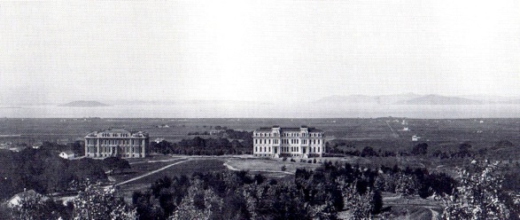

Hydraulics has been studied at Berkeley since the founding of the University of California in 1868. Witness the first published bulletin of the College of Mechanics (1883): Experiments with a Partial Turbine or Tangential Wheel, and Experiments with Hurdy Gurdy Wheels. Prepared by students working under Professor Frederick Hesse, the paper addresses the hydraulics and fluid mechanics of the water wheels which have attracted special interest in the mining regions of this coast and are designed for high heads and small supplies of water. Early Berkeley graduates worked, for example, at mining operations, or on the (in)famous California water projects.
|  |
From its initial focus on teaching, the hydraulics program (and engineering in general) at Berkeley gradually evolved to include an emphasis on research, and the program shifted and broadened its focus to topics which today encompass the field of environmental fluid mechanics. In particular, Murrough P. O'Brien spear-headed research beginning in the 1930s on such topics as beach erosion, surface waves, sediment transport, hydraulic modeling, and open-channel flow. During this time, research facilities and scope greatly increased, for example with the conversion of an abandoned pool on College Ave. into a wave pool, and the creation of a scale model of the Columbia River estuary. Such projects spawned studies in related fields such as Coastal Engineering and Naval Architecture. Professors such as H.A. Einstein, R. Wiegel, R.B. Krone, H. Fischer, J. Imberger, H. Shen, and others continued work at the Hydraulic Engineering Laboratory into the 1950s, 1960s, 1970s and beyond. More recently, elements of the naval architecture and water resources groups were consolidated into the environmental engineering group in the Civil and Environmental Engineering Department to create closer coupling between the chemical, physical, and biological aspects of fluid flows.
The current EFMH group at Berkeley has a strong focus on fundamental properties of flow and transport in the environment in surface water and atmospheric flows, and applications in hydrology.